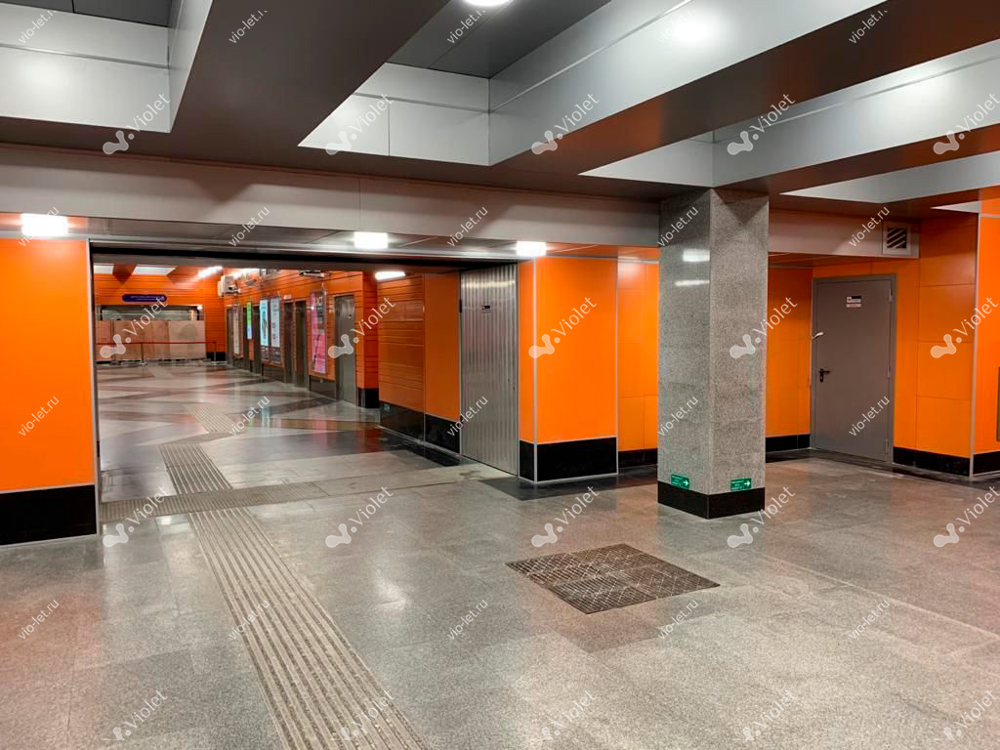

← Все проекты
РоссияФото 1 из 4
Реализованный проект
Проект VIOLET
Отделка общественного пространства системами VIOLET.

Решение для объекта
Что было поставлено
- Тип панелей
- —
- Основа
- —
- Покрытие
- —
- Объём
- —
- Срок выполнения
- —
- География
- —
Ваш объект
Подберём панели под требования проекта
Передайте назначение помещения, город и примерный объём — это уже достаточно для первого разговора.
Обсудить проект
Демонстрационная концепция, не официальный сайт.
Официальная карточка проекта ↗